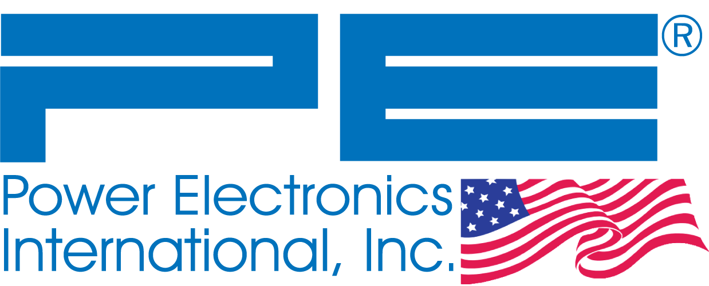
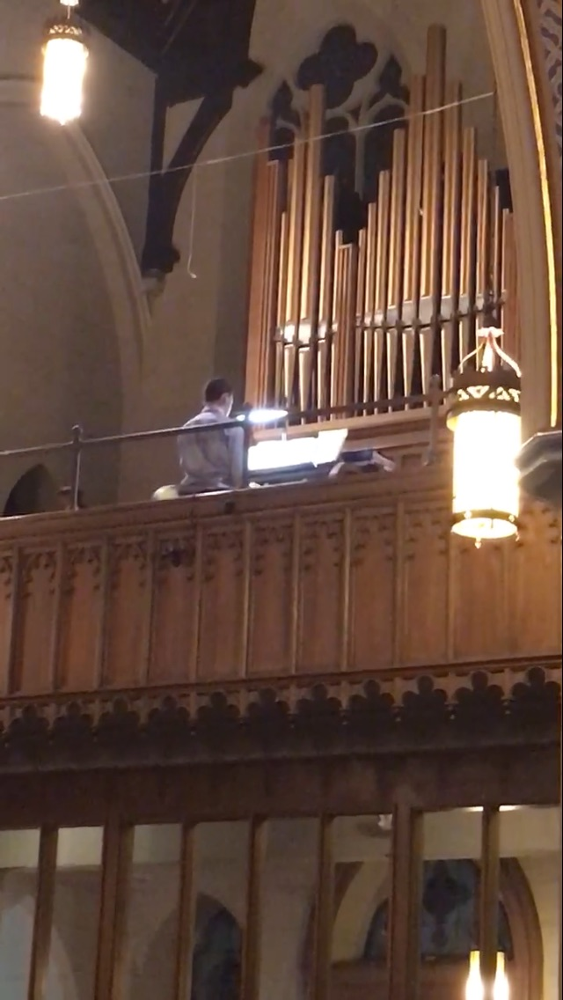
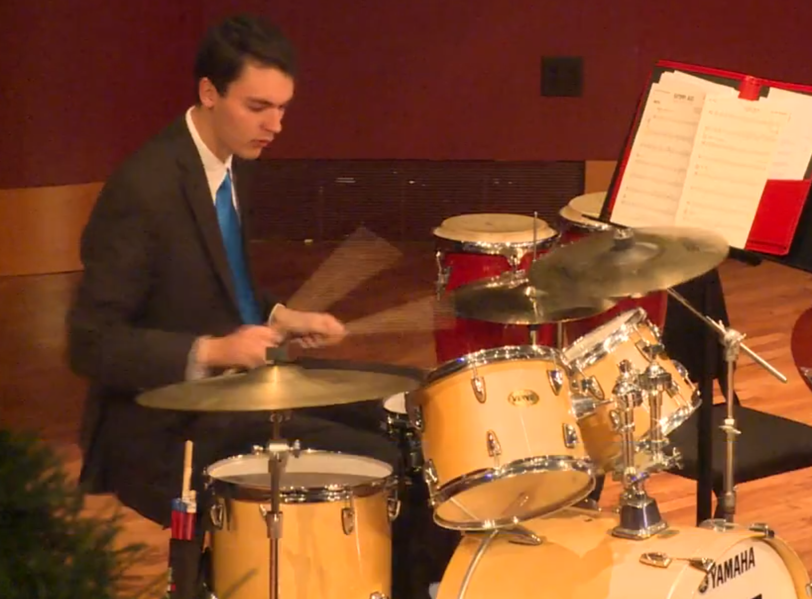

Home
Biography
Hey there! I'm Anthony Schmidt, and I'm from the Chicagoland area. Currently, I attend the University of Notre Dame where I am pursuing a B.S.
in Computer Science through the College of Engineering with an emphasis in Eletrical Engineering and Math. In addition to Software Engineering, I have advanced
accomplishments in music (piano, organ, percussion), golf, and Martial Arts. Check out the other tabs to see my achievements!
Skills
-
Software Engineering
- Languages: C/C++ | Python | Bash/Batch | Javascript, HTML, and CSS | Verilog | ARM and PIC Assembly
- Text Editors: Visual Studio Professional | Vim
- Strengths: Attention to detail | Efficiency | Neat/Consistent Formatting
- Additional abilities: Programming circuit boards | Web Development
-
Musicianship
- Instruments: Organist | Pianist | Percussionist | Vocalist
- Strengths: Sightreading | Improvisation | 4-part Compostion | Conducting
-
Martial Arts
- Taekwondo: Master (4th Degree Black Belt)
- Hapkido: 2nd Degree Black Belt
-
Golf
- Rolls: Instructor | Trained Caddie and Forecaddie
Contact Info
- Email: aschmi25@nd.edu
- Linked in: anthony-schmidt
- Github: anthony-schmidt
Experience
- 
-
Embedded Web Developer/Software Engineer
Power Electronics International (Dundee IL) - Summer 2021 - Present
- Built website for flagship crane model from the ground up that allowed customers to modify parameters in their product
- Utilized HTML, CSS, W3.CSS, and Javascript
- Wrote batch scripts and C files to efficiently test website and product compatibilty
- Worked closely with Chief Engineer, and assisted him with backend code using CGI and CGX files
- Parsed various data formats (XML (CGX), JSON)
- Collaborated with coworkers to ensure a user-friendly website and solve problems
- 
-
Church Music Leader
Saint Mary's, Saint Joseph's (Elgin IL) - Summer 2016 - Present
- Saint Mary's Parish, Saint Josephs Parish (Elgin IL), ND
- Organist, Pianist, and/or Choir Leader for weekly services and funerals
- Selected appropriate songs to engage the congregration
- Reliably substituted for other organists
- 
-
Accompanist/Musician
Notre Dame (IN), Chicagoland - Fall 2017 - Present
- Sightread piano music for vocalists during Musical Theater classes and audtions
- Played piano for drama practices and performances
- Musical entertainer for private and public events

-
Taekwondo Instructor/Master
TMA Martial Arts (Schaumburg IL) - Spring 2013 - Present
- Memorized 200 techniques and taught using their mirror images
- Instructed students of all ages (pre-school - adults)
- Led the entire class when Grand Master was busy
-
Assistant Golf Coach
Northridge Prep (Niles, IL) - Fall 2017 - Spring 2018
- Created and led golf drills
- Taught golf fundamentals and good sportsmanship
- Helped golfers with course management during play
Education/Awards
University of Notre Dame
- Pursuing a B.S. from the College of Engineering with a major in Computer Science and an emphasis in Math and Electrical Engineering
- Class of: 2024 | GPA: 3.74
- Completed Engineering Coursework: Embedded Systems, Data Structures, Operating Systems, Logic Design, Computer Architecture, Linear Algebra, Probability and Statistics
- Awards: Dean's list (2021), Monk Malloy Service (2021)
- Extracurriculars: Lead drummer in Jazz Band 1, Treasurer for Unchained Melodies - Choir
Northridge Prep High School
- Class of: 2020 | GPA: 4.0
- Academic Awards: Salutatorian (2020: Speech @ 14:06), Math Excellence (2020), Academic Acheivement (2020), National Honors Society (2019 - 2020), Illinois State Scholar (2020)
- Extracurricular Awards: Golf Athletic Leadership Award (2019, 2020), NRP's Got Talent (2020: Taekwondo Video), Band Leader and Music Excellence (2020), 4 year varsisty athlete (2016 - 2020), Best Drama Vocal Performance (2020)